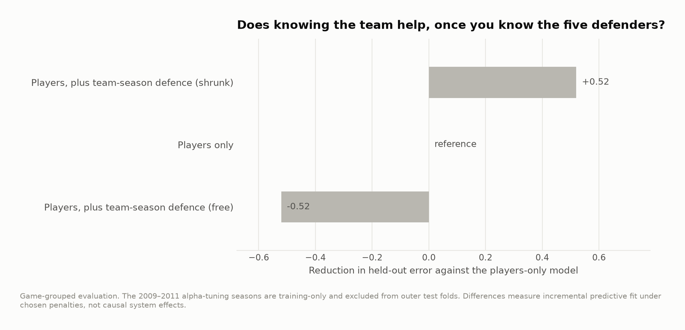
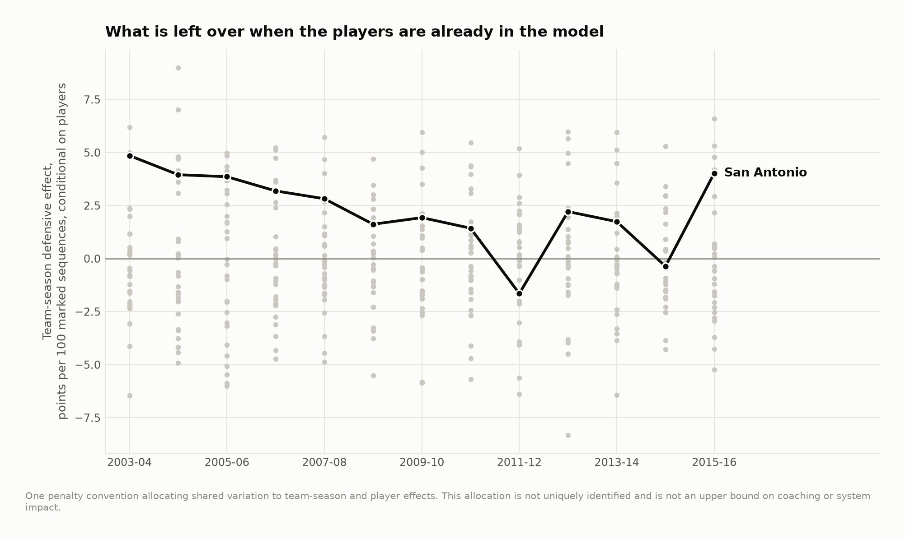

Duncan-era adjusted defense and the player/team allocation problem
Can public play-by-play separate a player's defensive contribution from the team context around him? This retrospective study covers 2003–04 through 2015–16, pools reconstructed lineups, and examines how adding team-season effects changes a regularized model.
It uses marked offensive sequences, not certified possession counts. It is best read as a methods and sensitivity study; a coefficient is not a causal measure of a defender or coach.
Which games survive reconstruction?
| Season | Games in source | Games kept | Retained share | Mean minute error (minutes) | Recorded points | Special FT points excluded | Modeled points |
|---|---|---|---|---|---|---|---|
| 2003–04 | 1,174 | 730 | 0.622 | 0.434 | 135,730 | 942 | 134,788 |
| 2004–05 | 1,218 | 746 | 0.613 | 0.436 | 144,315 | 909 | 143,406 |
| 2005–06 | 1,215 | 726 | 0.598 | 0.265 | 140,668 | 959 | 139,709 |
| 2006–07 | 1,214 | 1,132 | 0.932 | 0.252 | 223,302 | 1,679 | 221,623 |
| 2007–08 | 1,217 | 1,168 | 0.960 | 0.251 | 232,991 | 1,377 | 231,614 |
| 2008–09 | 1,228 | 1,203 | 0.980 | 0.249 | 240,213 | 1,496 | 238,717 |
| 2009–10 | 1,225 | 1,199 | 0.979 | 0.248 | 240,560 | 1,390 | 239,170 |
| 2010–11 | 1,226 | 1,197 | 0.976 | 0.249 | 238,131 | 1,717 | 236,414 |
| 2011–12 | 990 | 959 | 0.969 | 0.249 | 184,334 | 1,177 | 183,157 |
| 2012–13 | 1,226 | 731 | 0.596 | 0.471 | 143,039 | 856 | 142,183 |
| 2013–14 | 1,225 | 1,178 | 0.962 | 0.461 | 237,470 | 1,388 | 236,082 |
| 2014–15 | 1,226 | 1,157 | 0.944 | 0.459 | 231,040 | 1,139 | 229,901 |
| 2015–16 | 1,227 | 559 | 0.456 | 0.458 | 115,635 | 638 | 114,997 |
Source: reconstruction_audit.csv.
The source feed assigns zero score_value to many made free throws in older seasons. The corrected pipeline assigns one point to a marked made free throw and requires team totals to match the box score. Period boundaries reset sequence IDs. Identified technical and retained-ball free throws do not create control changes; their points are separately excluded and audited. Kept games reconcile feed scoring to box scores and modeled ordinary scoring to retained events. Lineups must pass minute checks. Coverage varies by season and exclusion is not random.
Does a team-season term improve prediction?
| Model | Cv mse | Cv sd | Vs players only | Folds improved |
|---|---|---|---|---|
| Players only | 3612.375 | 24.406 | 0.000 | 0.000 |
| Players, plus team-season defence (shrunk) | 3611.855 | 24.273 | 0.520 | 5.000 |
| Players, plus team-season defence (free) | 3612.896 | 24.323 | -0.521 | 1.000 |
Source: system_cv.csv.
Mean squared errors use squared points per 100 marked sequences. Differences compare the listed specifications on the same evaluation design.
The 2009–2011 seasons choose the player penalty and are always training-only in the outer evaluation. Test folds contain other games; the published split makes this separation inspectable. This is a retrospective held-out comparison, not a future-season forecast.

Why player and system credit cannot be uniquely separated
The same players share the floor for the same team. Their defensive indicators overlap strongly with team-season indicators. Different penalty conventions allocate shared variation differently. Similar player estimates under the chosen conventions show limited sensitivity to those particular choices; they do not prove that the estimate is a player effect independent of scheme.
A small change in predictive error also does not show that coaching or a defensive system is unimportant. Their effects can already be absorbed in player coefficients. The team-season estimates are not causal upper bounds on a system.

Rolling windows overlap and use information on both sides of their displayed center season. They describe historical fitted associations. Eligibility thresholds select a subset of players, so comparisons are conditional on that subset, not “best of all time” claims.
Basketball use
This is useful as a transparent demonstration of regularization, reconstruction quality and identifiability. It belongs behind the portfolio's coaching-oriented studies. A stronger decision tool would combine independently validated possessions, film context and a specific rotation question rather than treating the player/team split as settled.
Reproduce
The historical analysis used Python 3.12 with the pinned dependencies below. From this repository:
python3.12 -m venv .venv
source .venv/bin/activate
python -m pip install -r requirements.txt
make fetch-data PY=python
make all PY=python
make report site PY=python
make all verifies source hashes before running the analyses in order. A missing or changed input stops the build. Data downloads need network access; article rendering uses the included result tables. See the source manifest, method notes and current validation record for the distinction between a source rebuild and checks of delivered outputs.
Season keys in CSV files use the ending year: 2025 means 2024–25. Display tables use full season labels. The MIT license covers code; third-party data retain their providers' rights and terms.